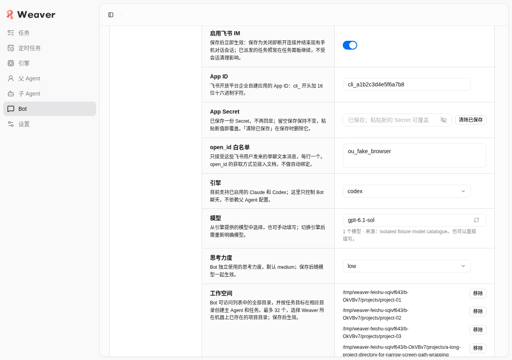
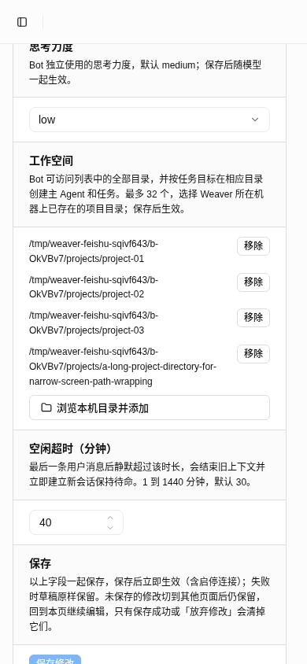
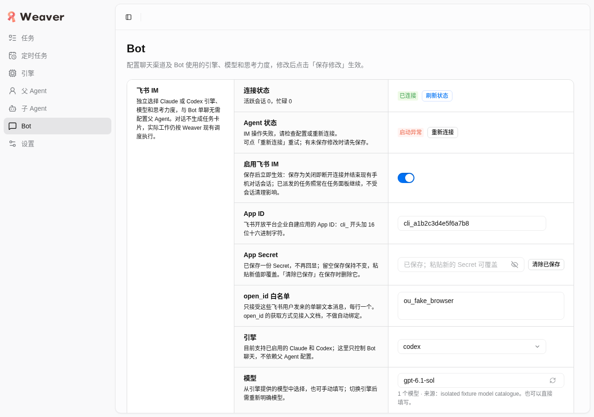

交付验收 · 2026-10-21
Bot 独立页面与多工作空间
源码验收通过；生产等待托管任务完成，尚未切换
独立选择 Codex / Claude、模型与思考力度；配置全部可访问目录，按目标创建项目任务。本文分别说明自动检查、隔离浏览器、真实宿主初始化、代码复审与生产观测。
源码 tree 230411bba97f2efad4790186d3b3775232483891
基线 84178ebcedc95325cc88fa340d02f6de0a8007c1 · 产品与测试字节冻结，报告文档后续单独交付。
已验证
| 层次 | 真实结果与边界 |
|---|
| 全套与构建 | 1445 pass / 0 fail / 10 opt-in skip，总1455；typecheck、Vite、Node bundle、Bun standalone均通过。10项外部Herdr测试由显式运行的独立组补验，不算此全套已执行。 |
| 隔离浏览器 | 42项断言通过：3d2完整场景38项，3b5ee最终页面4项小范围复验；0c77的4项为历史中间smoke。独立比较227个src：3d2→3b5ee仅CLI/run.ts与IMservice变化；3b5ee→230411仅parent-herdr变化，renderer与service完全相同。完整草稿/CAS场景按影响分析复用，没有声称全部在最终树重跑。真实HTTP/RPC/store/CAS/目录，仅外部Channel/parent/catalog fake。 |
| 真实Herdr + fake CLI | 既有0c77基线Node10/Bun10完整故障组通过；最终230411动态入口发行Node2/Bun2另验共4项通过。覆盖not-submitted、双确认取消、续聊、同cgroup与whole close；不是模型回答测试。 |
| 发行启动 | 无源码、无node_modules的独立cwd，Node/Bun实际发行均可启动HTTP/RPC、加载真实JS/CSS/png；非法私有入口安全退出。315项dist hash、322文件候选逐项核对。 |
| 真实Codex初始化（0c77历史） | Codex/gpt-6.1-sol/low，双目录，1382ms ready，权限来源检查通过、host/engine同cgroup、关闭成功。零send/turn-start，未测模型工具读写；未审计网络，零用户回合不等于零provider流量。1382ms不能当消息响应延迟。 |
首轮3d2全check曾有3处CLI静态main依赖门禁失败，已改私有分支字面量dynamic import并经后续固定树全套复验；不是OOM或清理终止。发行候选准备脚本的删除项校验错误也已纠正并完整重跑4项，不计产品缺陷。
安全证据摘要与来源SHA256（JSON）保留精简事实，不复制凭据、原始body/HAR或大体积日志。
页面、草稿与恢复
主导航 /#/bots 直达/刷新、Settings分离；默认idle30。UI添加/移除/再添加多目录，与Codex/model/low真实保存，数组顺序正确、Secret不回填。两次真实32秒等待分别验证Secret-only及混合目录草稿轮询保留，手动刷新、跨页、clear-pending及beforeunload保护有效。
真实CAS冲突及save/get/reconnect/目录故障均可恢复；强制读取失败保留全草稿，成功清旧字段与保存错误。已开目录弹窗时真实5秒save/force-read锁住pointer、键盘和ModelPicker，晚到真实目录结果不覆盖当前状态。modal无保存入口，按授权触发背景原DOM按钮处理器，未改React状态。目录重复/32上限/真实别名store拒绝/失效目录仍可仅关闭；数字0、1441不可保存旧值，放弃或强制载入重置可见数。
Agent starting/closing/error→ready与网络连接独立，activeSessions0仍可待命；任务与日程共享Picker选择、清除、失败重试正常，未创建真实任务或调度。1280/390长目录可读、无横向溢出，label及键盘Tab/Enter/Escape核对通过。

完整浏览器轮次：1280桌面，只含fake配置。
390宽度：长目录分行、移除按钮与保存说明可读，无横向溢出。
真实service计算的网络已连接与Agent启动异常并存；随后显式重连恢复待命。采证有效：artifact_errors=[]，console只有debug/info，page errors空。1355条XHR/fetch的16条错误全部有解释：故障注入get500×6、目录500×2、save500×1、reconnect500×1；真实CAS save400×1；fixture禁止worker探测403×4、engine扫描403×1。没有未解释错误；原始body已删除。
最终审查与生产
此前Pro fde95025未通过，指出replacement未ready即误过期。service增加parent就绪门槛，真实受控回归由0/2变2/2，4486轮复审通过。随后发行探针发现长socket预检rmSync目录触发EISDIR并留无record epoch，连续调用再ENOENT；仅改rmdirSync空目录，正式factory连续失败回归由0/1变1/1，两次invalid_input、root为空且runner0。最终646ed8f4轮明确通过，无剩余阻断。这些是源码复审与本地受控回归，不冒充Pro执行测试。
ChatGPT Pro：最终230411源码复审通过，最终轮次 646ed8f4-a4a6-4351-8671-30f301e511f7，reply.final=true、archive stored、gaps=[]。通过 ChatGPT Review工作流的代码复审不等于独立测试或手机验证。
生产：源码验收通过，生产等待托管任务完成而未切换。安全观测时间 2026-10-21T13:08:44.945696+00:00：activated=false，managedWorkers=4，4737原服务保留。用户要求等待托管任务自然完成，先提交已验收Bot基线，继续新增功能后统一切换。这是有意延后，非激活失败，不代表新版已上线。prepared release为 /home/mocha/.local/share/weaver/releases/20261021-bot-230411bba97f；凭据/策略未因本次准备改变，真实数据保留。
明确未验证
真实手机完整链路、多项目派发、流式卡片实时推进、正文选项与机器人菜单；真实模型busy、真实多目录工具读写；实际dark主题（应用固定light）；recent-directory历史分支（未创建任务历史）；新版消息响应性能。历史35.263秒/20.318秒仅属旧版服务器准入至CardKit最终更新观测，不能证明本版性能或代理责任。
Codex多目录只接受可证明的既有权限来源，null/无法验证的外部profile安全拒绝；不自动提权，也不宣称支持外部sandbox多目录。
清理与保留
完整轮与中间、ready-gate轮Chrome/profile、所有自有隔离服务/端口、DB/settings/projects/cache和原始采证现场均已精确删除；scope inactive。host包自有42个epoch及最终4个host的unit/tab/cgroup、发行HTTP临时进程/数据、真实Codex初始化host均已释放。没有关闭共享Herdr或读取foreign标签内容。owner最终确认自有Pro审查target3D11在空草稿、无生成和附件后已手动关闭；finish的借用页closed=false不代表该自建页仍保留，共享Chrome及其他会话保留。
持续资源：原生产 weaver.service、4737端口、真实DB/settings、一致性备份及immutable prepared release持久保留；本版新Herdr host尚未上线，激活后才按用户要求常驻；生产未切换的观测以上方安全证明为准；待用户新增功能与托管任务结束后统一切换。
归属不明的保留资源：wv-botlife-28d56c0a-e0101f1f 被router判定 session_foreign:1。unit herdr-session-wv-botlife-28d56c0a-e0101f1f.scope，PID989261/start12297610。未读内容、未杀删；接收人为当前owner/user，释放须用户核实归属并明确授权。完整最小身份及约束在安全JSON，不宣称所有临时进程均已释放。